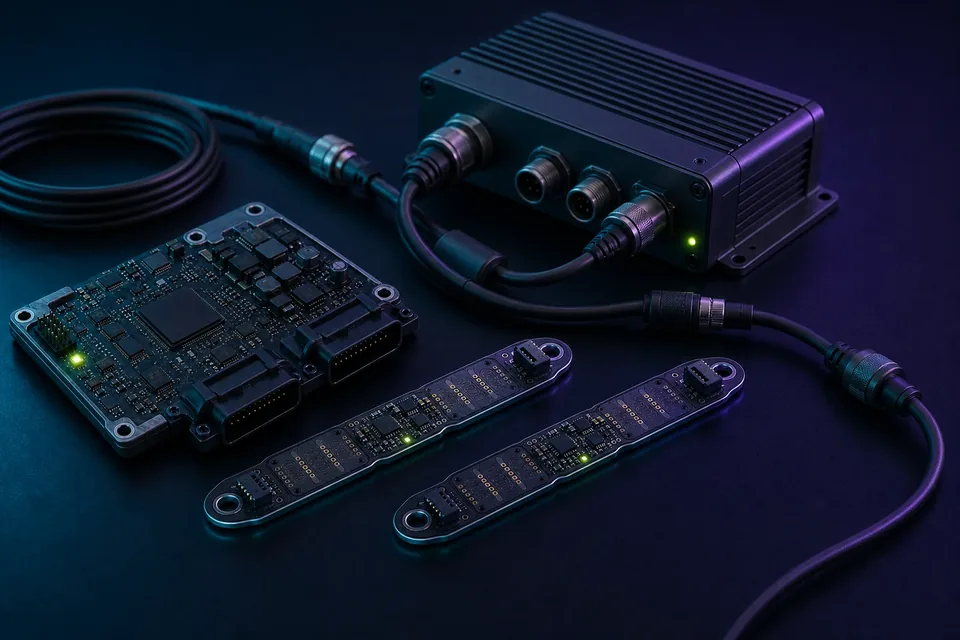

Intelligent interfaces
Voice, audio, radar, camera and local inference combined with cloud services and secure application delivery.
Application markets
Active-ESL combines reusable embedded foundations with programme-specific sensing, connectivity, interfaces and software.

Priority markets
Voice, audio, radar, camera and local inference combined with cloud services and secure application delivery.
Connected equipment requiring long-life hardware, industrial options, maintainable Linux or Zephyr sensing nodes, and dependable field updates.
Multi-radio systems that bridge Ethernet, Wi-Fi, cellular, LoRa and evolving network technologies.
Interactive or low-power displays with managed content, remote scheduling and programme-specific power targets.
Real-time electrical monitoring, connected charging equipment and secure integration with operational services.
Proven engineering foundations
Audio, radar sensing, onboard Wi-Fi and cellular expansion integrated around a small i.MX 8M Mini board and supported Linux platform.
Flexible PCIe and M.2 expansion used to evaluate LoRa, Wi-Fi and cellular combinations as network requirements evolved.
A compact controller and mechanically constrained sensor boards engineered as one system for demanding data-acquisition environments.
Application processing combined with GPS, FPGA logic and specialised measurement circuitry for real-time energy use cases.
Low-power i.MX 93 design work targeting infrequent cloud updates and multi-year operation from a primary battery.
Your application
We will map the workload, environment, interfaces, power and lifecycle needs to a standard platform or a focused custom variant.